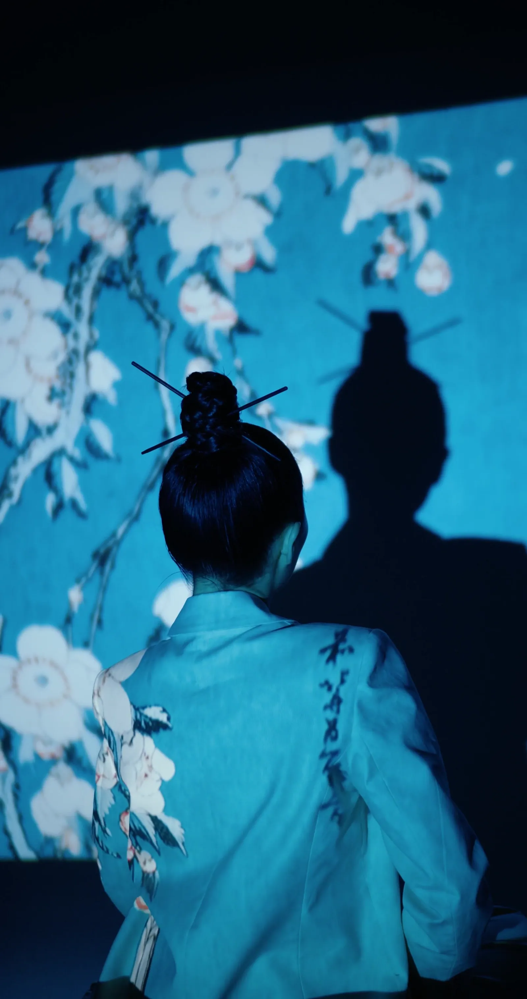
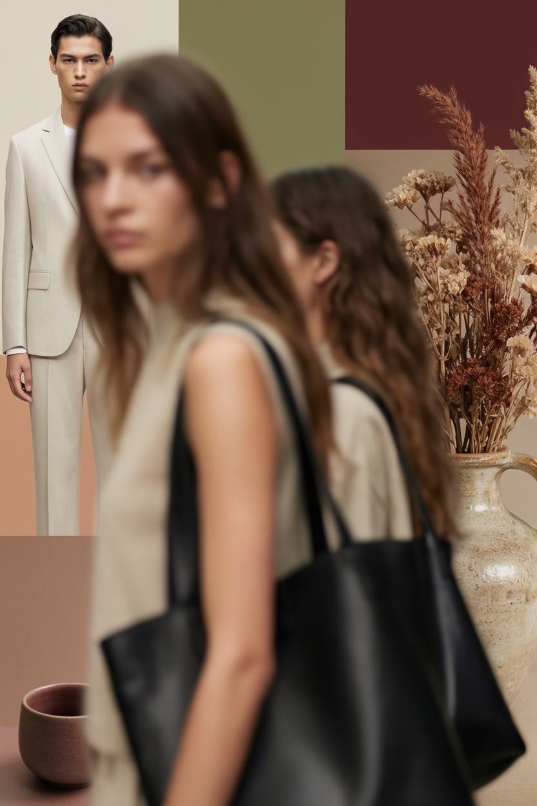
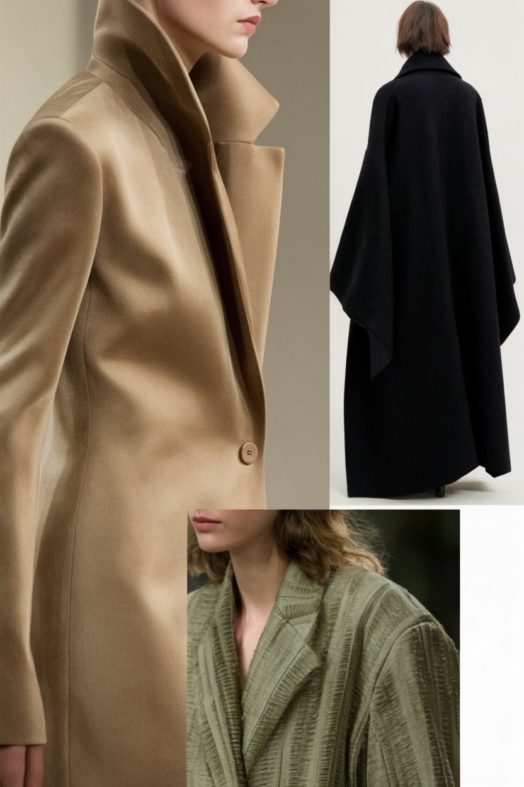
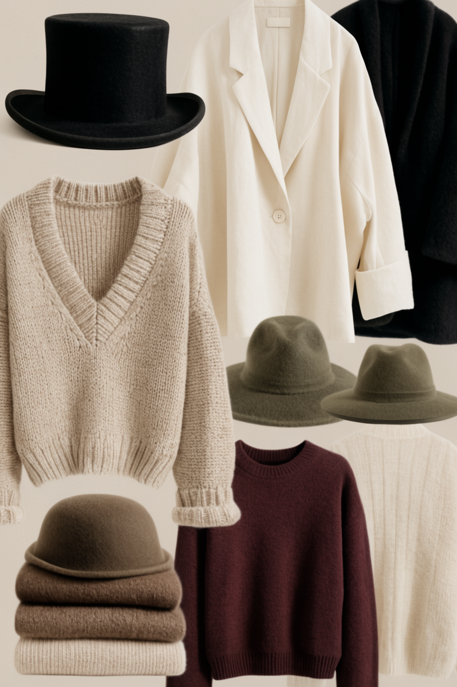

Un dictionnaire de 348 accords, traduits en tenues que vous pouvez porter — et acheter.

Une photo — un mur, une fleur, un vêtement. WADA compose la tenue qui s'accorde.

Choisissez une palette parmi les 348, WADA compose autour.
Dites une pièce, une humeur. Il compose et explique pourquoi ça marche.

Votre mémoire vestimentaire — WADA devine ce qui vous ira demain.
On n'achète pas les mauvaises pièces — on achète les mauvaises couleurs.